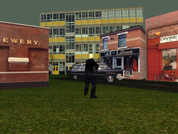

urban planning, public domain architecture, urban space sociology, serious games, creative games The game presented, based on the architectonic visions and challenges of British architect Will Alsop will be demonstrated, its features will be explained, and a variety of planning processes, strategies and problems will be shown in detail. The presenter will show how to rethink and rebuild a city, using special wands (tools) to change the city centre of Bradford (England). The operations of altering the cities many attributes will be shown. Aesthetic and sociological considerations will then be cast on the nature of the city built.
Abstract PlastiCity is a computergame for multiple users which allows players to reshape Bradford's city centre according to their own, or a shared, vision. The game is inspired by the English architect Will Alsop's design for a new Bradford (Bradford Masterplan). The project is a complete modification of UnrealTournament with new wands (weapons) developed to build, demolish, repaint, rescale and rotate buildings. The project started in the summer of 2004 as an investigation into urban planning aspects, as a research into the current, past and possible future of urban structures and into the history of visions of "cities of the future" (Charles Fourier, Le Corbusier, Fritz Lang, Sci-Fi, Computer Games, Archigram, Will Alsop ...). The project currently consists of a prototype of the final game, with realistic architectonic models, basic gameplay and a set of functions developed for the purposes of creating buildings, redecorating them, destroying them ...) The project is currently in phase 2: In close contact with Alsop the project team designs specific "possible buildings" and urban planning strategies for the game. At the same time it implements ethnic specifica and age/ gender-specific gameplay elements. The team is about to model different player pawns (avatars) and create an interface for the game which is easy to use, fun and rich in the possibilities for interaction and collaboration. PlastiCity is an experiment in the employment of gaming technologies for social and cultural ends. It takes an innovative approach to engaging the citizen with the decisions and process of urban planning. This project: . creates a detailed, multiplayer environment based upon a meticulous modelling of a city centre . creates a range of tools with which architecture and the built environment may be transformed in various ways . creates a social/democratic context in which the game may be used to promote constructive discourse . creates a template by which the process may be repeated in other cities, at schools, universities and in planning departments There is a number of other projects which explore similar territory but have not yet developed representations of 3D environments or complexity of interaction approaching the sophistication of PlastiCity. These include: . Urbis' Create Your own Supercity http://www.urbis.org.uk/general.asp?page=197, a drawing game . Jeanne van Heeswyk and Dennis Kaspori's Face Your World http://www.faceyourworld.nl a project with shared similar aspirations to PlastiCity in which an area of downtown Columbus, Ohio was modelled and can be manipulated in various ways . And last not least - but not completely in the line of individual customization - SimCity PlastiCity can be considered a serious game insofar as it is based on careful research into the City Council's planning, The City Centre Masterplan, the wishes and aspirations of the local population and the history of utopian cities of the future. However, our intention is that the game should firstly and foremostly be fun to play. To this end, it is our intention that the game will contain additional playful elements (sub-games and "easter eggs") which will add to the playability, longevity and relevance to the District's citizens of the game experience. Buildings like the City Hall, Magistrates Courts, the Alhambra Building or the Police Station are rooted in the city's history. Visions of the planned Lightwave Building, "Alsop mushrooms" and the soon to come central lake provide with glances to a futuristic Bradford. With these buildings introduced the serious games becomes seriously ludic. Mushroom buildings grow from the ground, the lake's water level falls and rises with the tide and allows the users to change Bradford into a Venice of the North, a subaquatic town or an island in the polar sea. URLS:
PlastiCity |